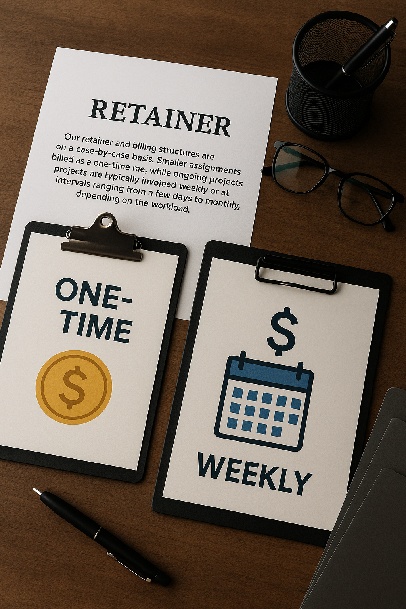

About
We work with a limited number of clients on a regular, full-time basis. As a result, we may occasionally decline new assignments when our capacity is fully committed.
Market
Our clients are primarily U.S.-based companies seeking support both domestically and internationally, leveraging our global network of contacts across various industries.

Retainer
Our retainer and billing structures are established on a case-by-case basis. Smaller assignments may be billed as a one-time fee, while ongoing projects are typically invoiced weekly or at intervals ranging from a few days to monthly, depending on the workload.